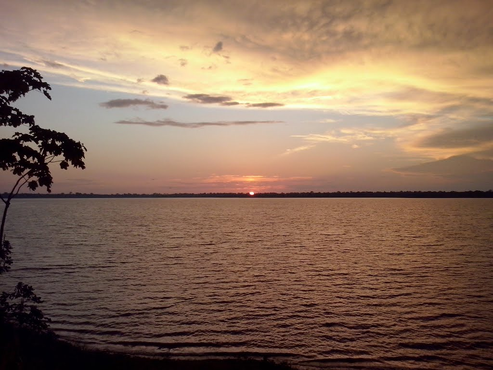

01 · NATURALEZA VIVA
Lago de Caballococha
La tradición oral cuenta que el nombre viene de un antiguo mito sobre un caballo blanco que salía de las profundidades del lago en las noches de luna.
MÁS INFORMACIÓN ↗